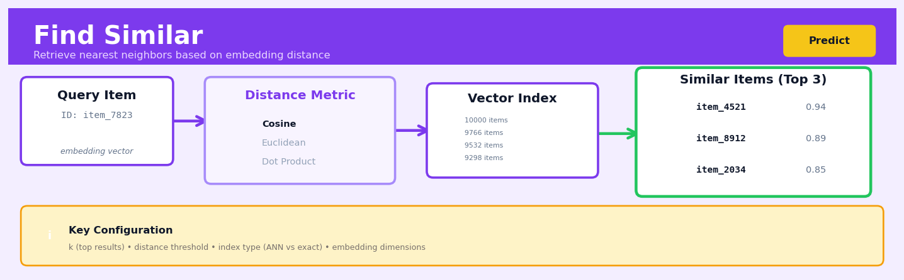
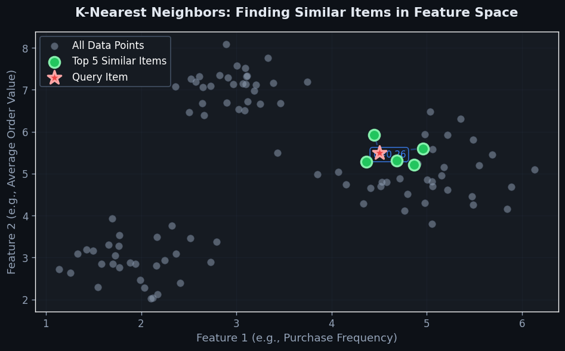
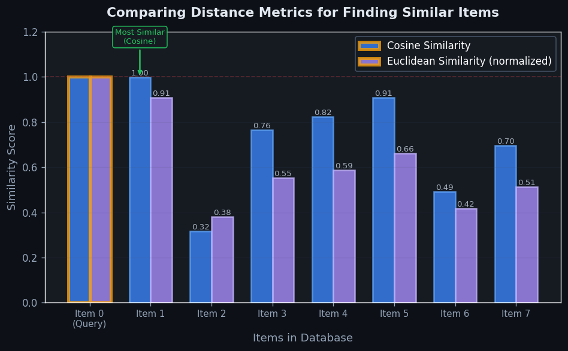

Find Similar#


The biggest mistake teams make with Find Similar is not setting a distance threshold alongside the top-k parameter. You'll end up returning exactly k items even when the query has no truly similar matches, which leads to nonsensical recommendations that erode user trust. Always combine a maximum distance cutoff with your k value, and monitor the distribution of similarity scores in production to tune both parameters together.
The 60-Second Version#
What it does: Find Similar identifies the most comparable records in your dataset to any item you specify, based on their characteristics.
When to use it: You need recommendations, want to find duplicate or anomalous records, or need to understand what existing cases most resemble a new situation.
What you get back: A ranked list of the k most similar items with similarity scores, which you use to recommend products, flag unusual entries, or inform decisions based on past precedent.
At a Glance:
Difficulty |
Easy |
Typical runtime |
Seconds on 100K rows; minutes on 10M+ rows |
What you bring |
A dataset with numeric or categorical features and a query item to match against |
What you get |
Ranked list of k most similar records with similarity scores |
Heuristix bucket |
Predict — Machine Learning & Forecasting |
The quality of your similarity matches depends entirely on choosing features that actually matter for your definition of “similar”—garbage features produce garbage neighbours.
Learning Objectives#
After reading this chapter, a business user will be able to:
Identify business scenarios where Find Similar provides value, such as product recommendation, fraud detection by analogy, or case-based troubleshooting, and distinguish these from problems requiring predictive models.
Interpret similarity scores and nearest-neighbour results to explain to stakeholders why specific records were matched and assess whether the matches align with business logic.
Use Find Similar outputs to make operational decisions such as recommending alternatives to customers, identifying comparable benchmark cases, or flagging anomalies that deviate from normal patterns.
After reading this chapter, a data scientist will be able to:
Implement Find Similar workflows including feature selection, distance metric choice, and efficient retrieval algorithms while handling edge cases like ties, high-dimensional data, and categorical variables.
Tune the number of neighbours (k), distance metrics, and feature weighting schemes by evaluating their impact on retrieval quality, computational cost, and sensitivity to outliers.
Validate Find Similar performance using appropriate metrics such as precision@k or qualitative review, and diagnose failure modes including curse of dimensionality, irrelevant feature dominance, and sensitivity to scaling.
Overview#
Find Similar is a nearest-neighbour retrieval technique that identifies the \(k\) most similar records to a given query point from a reference dataset, based on a defined distance or similarity metric in feature space. It belongs to the family of instance-based learning methods—also called memory-based or lazy learning methods—which defer computation until query time rather than constructing an explicit predictive model during training. The core purpose is to answer the question: “Given this specific entity, which other entities in my dataset are most like it?”
When to Use This#
Customer segmentation and lookalike audiences: When you have a high-value customer and want to find other customers with similar characteristics to target for marketing campaigns or retention efforts.
Anomaly investigation: When an automated system flags a transaction or event as unusual, use Find Similar to retrieve the most comparable historical cases to understand what “normal” looks like for that entity type.
Product recommendations: When a user is viewing or has purchased a product, find the most similar products in your catalogue to suggest complementary or alternative items.
Case-based reasoning in support systems: When a support agent encounters a new issue, retrieve similar historical tickets to surface proven resolutions and reduce time-to-resolution.
Fraud pattern matching: When investigating a suspicious claim or transaction, find the most similar historical cases to determine whether the pattern matches known fraud profiles.
Competitive benchmarking: When analysing a specific company, property, or asset, find the most comparable entities in a reference dataset to establish meaningful peer groups for benchmarking.
Data quality and deduplication: When ingesting new records, find similar existing records to identify potential duplicates or matches that require merging.
Do NOT use when you need a predictive model: If your goal is to predict a target variable for new observations, use a supervised learning method instead. Find Similar retrieves, it does not predict.
Do NOT use with very high-dimensional sparse data without preprocessing: Raw text or one-hot encoded categorical features with thousands of dimensions will suffer from the curse of dimensionality—distances become meaningless. Apply dimensionality reduction first.
Do NOT use when interpretability of the matching logic is paramount: Nearest-neighbour methods can be opaque about why two records are similar. If you need explicit, rule-based matching criteria, consider deterministic matching approaches.
Questions This Answers#
Customer Understanding and Personalization#
Which customers look most like our top 500 accounts, so we know where to focus our enterprise sales team?
If this customer just bought product A, which other customers behaved similarly in the past, and what did they buy next?
Who are the 20 customers most similar to the ones we lost last quarter, and are they showing the same warning signs?
This prospect matches our ideal customer profile — which existing clients should our sales team reference in the pitch?
Which subscribers are behaving like users who upgraded to premium within 60 days?
Product and Content Recommendations#
When someone views this product, what are the 10 most similar items we should show them to increase conversion?
This article got 50,000 views last week — which other pieces in our content library should we surface to keep readers engaged?
Which properties should we recommend to someone who just favorited these three listings?
If a customer returns item X, which alternative products are close enough that we should suggest them as replacements?
Risk Detection and Fraud Prevention#
Does this transaction look like the patterns we saw in confirmed fraud cases from the last six months?
Which current loan applications most closely resemble the ones that defaulted within 12 months?
This warranty claim seems unusual — what are the most similar historical claims, and were any of them fraudulent?
Operational Efficiency#
We need to staff the call center for this new product launch — which past launches had similar characteristics, and what was the volume curve?
Which store locations have the most similar demographics and performance to our top-performing Chicago outlet?
How It Works#
Imagine you’re a librarian helping someone who loved “The Martian” find their next read. You don’t need a complex formula—you simply think about what made that book special: hard science fiction, survival story, humor in adversity, solo protagonist problem-solving. Then you walk through your mental catalogue of books, comparing each one against these characteristics. “Project Hail Mary” shares almost all of them—that’s a near-perfect match. “Gravity” has the space survival angle but less humor. “Into Thin Air” has survival but isn’t science fiction. You naturally rank every book by how many key traits it shares, and recommend the top three. That’s exactly what Find Similar does with data.
REFERENCE DATASET QUERY POINT
(stored records) (find similar to this)
┌─────────────────┐ ★
│ ● ○ ○ │ New Customer
│ ○ │ Age: 34, Income: 85K
│ ○ ● │ City: Urban
│ ○ ○ │
│ ○ ● │ ↓
│ ○ ● │ [Calculate distances]
└─────────────────┘ ↓
┌──────────────────┐
STEP 1: Calculate │ Distance Ranking │
distance from ★ ├──────────────────┤
to every point │ ● → 2.1 ←─┐ │
│ ● → 3.4 │ │
STEP 2: Sort by │ ● → 4.7 │ │
distance │ ○ → 8.2 │ │
│ ○ → 9.1 │ │
STEP 3: Return └──────────────────┘
top k=3 ↓
Most similar records!
Step 1: Choose your features. The algorithm starts by deciding which characteristics matter for comparison. If you’re finding similar customers, you might use age, income, purchase history, and location. These become the dimensions in your comparison space—like choosing which aspects of books matter when finding similar reads.
Step 2: Represent the query point. Take the specific record you want to match and express it using those same features. Your new customer becomes a point defined by their age (34), income (85K), location (urban), and other tracked attributes. This is your anchor—everything else is measured relative to this.
Step 3: Calculate distance to every reference point. The algorithm compares your query point to every single record in your reference dataset. For each comparison, it measures how far apart the two records are across all features. A customer who’s age 35 with 82K income is very close; someone who’s 19 with 25K income is far away. This distance captures overall similarity.
Step 4: Sort by proximity. Once distances are calculated for all records, the algorithm ranks them from nearest to farthest. The smallest distances represent the most similar records—these are your neighbors in the feature space.
Step 5: Return the top k matches. Finally, select however many similar records you want—typically called k. If k equals five, you get the five nearest neighbors. These are your results: the records most like your query point based on the features you chose.
The key insight: Similarity in data is just proximity in feature space—things that are alike cluster together, so finding what’s nearby finds what’s relevant.
The Intuition#
Imagine you are a sommelier at a fine restaurant. A guest tells you they loved a particular wine from last month but cannot remember the name—only that it was “medium-bodied, slightly oaky, with dark fruit notes.” You mentally search through your cellar, comparing these characteristics against every bottle you stock. You do not build a mathematical model of wine preference; instead, you retrieve the bottles that most closely match the described profile. This is exactly what Find Similar does: given a query record, it scans a reference dataset and returns the records that are “closest” according to some measure of similarity.
The power of this approach lies in its simplicity and flexibility. Unlike parametric models that compress data into fixed-form equations, instance-based methods retain the full dataset and let the data speak directly. When a query arrives, the algorithm computes the distance between the query and every candidate record, ranks them, and returns the top \(k\) matches. This makes the method highly adaptable—it can capture arbitrarily complex relationships in the data without requiring us to specify a functional form in advance.
The critical design choice is the definition of “closeness.” Two records might be similar in one feature space but dissimilar in another. A customer might be similar to another in terms of demographics but very different in purchasing behaviour. The choice of features to include, how to scale them, and which distance metric to apply fundamentally determines what “similar” means in your context. This is not a limitation—it is a feature. It forces the analyst to make explicit choices about what dimensions of similarity matter for the business problem at hand.
The Mathematics#
Problem Setup and Notation#
Let \(\mathcal{D} = \{\mathbf{x}_1, \mathbf{x}_2, \ldots, \mathbf{x}_n\}\) be a reference dataset of \(n\) records, where each record \(\mathbf{x}_i \in \mathbb{R}^p\) is a \(p\)-dimensional feature vector. Given a query point \(\mathbf{q} \in \mathbb{R}^p\), the goal is to find the set \(\mathcal{N}_k(\mathbf{q}) \subseteq \mathcal{D}\) containing the \(k\) nearest neighbours of \(\mathbf{q}\) according to a distance function \(d: \mathbb{R}^p \times \mathbb{R}^p \rightarrow \mathbb{R}_{\geq 0}\).
Distance Metrics#
The choice of distance metric is fundamental. The most common metrics form the family of Minkowski distances:
Special cases include:
Euclidean distance (\(r = 2\)):
Manhattan distance (\(r = 1\)):
Chebyshev distance (\(r \rightarrow \infty\)):
For normalised vectors or text embeddings, cosine similarity is often preferred:
This can be converted to a distance:
For mixed data types, the Gower distance generalises to handle numeric, categorical, and binary features:
where \(d_j\) is the appropriate distance function for feature \(j\) (range-normalised absolute difference for numeric, indicator for categorical), and \(w_j\) are feature weights.
The k-Nearest Neighbour Retrieval Problem#
Formally, we seek:
In practice, this is solved by computing \(d(\mathbf{x}_i, \mathbf{q})\) for all \(i \in \{1, \ldots, n\}\), sorting, and selecting the \(k\) smallest.
Assumptions#
Feature commensurability: All features must be on comparable scales, or the distance metric will be dominated by high-variance features. Standardisation or normalisation is typically required.
Metric validity: The distance function \(d\) must satisfy the properties of a metric (non-negativity, identity of indiscernibles, symmetry, triangle inequality) for geometric interpretations to hold.
Meaningful feature space: The selected features must capture the dimensions of similarity relevant to the business problem. Irrelevant features add noise.
Sufficient data density: In high-dimensional spaces, data becomes sparse and all points become approximately equidistant—the curse of dimensionality.
The Curse of Dimensionality#
As dimensionality \(p\) increases, the ratio of the distance to the nearest neighbour versus the farthest neighbour converges to 1:
This means that in high dimensions, the concept of “nearest” becomes less meaningful. Empirically, this effect becomes pronounced when \(p > 20\) without sufficient data. Mitigation strategies include dimensionality reduction (PCA, UMAP) or feature selection.
Computational Complexity#
Brute-force nearest neighbour search has time complexity \(O(np)\) per query. For large datasets, approximate methods using spatial data structures achieve sublinear query time:
KD-Trees: \(O(p \log n)\) average case, but degrade to \(O(np)\) in high dimensions
Ball Trees: Better for high dimensions, \(O(p \log n)\) average
Locality-Sensitive Hashing (LSH): \(O(p)\) with tuneable approximation guarantees
Relationship to k-NN Classification#
Find Similar is the retrieval component underlying k-nearest neighbour classification. In k-NN classification, after retrieving \(\mathcal{N}_k(\mathbf{q})\), a prediction is made by majority vote:
Find Similar stops at retrieval—it returns the neighbours themselves rather than aggregating their labels.
Understanding the Mathematics#
Understanding the Mathematics#
Euclidean Distance#
The equation:
Read it aloud:
The distance between point x and point y equals the square root of the sum of all the squared differences between corresponding features.
What each symbol means:
\(d(\mathbf{x}, \mathbf{y})\) — the distance between two data points
\(\mathbf{x}\) and \(\mathbf{y}\) — two records we’re comparing (vectors in feature space)
\(x_i\) and \(y_i\) — the value of the \(i\)-th feature in each record
\(n\) — the total number of features
\(\sum\) — add up all the terms that follow
\((x_i - y_i)^2\) — the squared difference for one feature
A concrete numerical example:
Imagine comparing two customers for a recommendation engine. Customer A has age = 35, income = 65,000, purchases/year = 12. Customer B has age = 38, income = 70,000, purchases/year = 15.
Why this equation matters:
Without a rigorous distance measure, “similar” becomes subjective opinion; this equation gives us a consistent, repeatable way to rank which records genuinely resemble our query point.
Manhattan Distance#
The equation:
Read it aloud:
The distance between point x and point y equals the sum of the absolute differences across all features.
What each symbol means:
\(|x_i - y_i|\) — the absolute value of the difference (always positive)
All other symbols same as Euclidean distance
A concrete numerical example:
Using the same two customers:
Notice how this gives a slightly different ranking than Euclidean distance—no squaring means large differences don’t dominate as heavily.
Why this equation matters:
Manhattan distance is less sensitive to outliers and extreme values, making it preferable when one unusually large feature difference shouldn’t drown out all other considerations.
Cosine Similarity#
The equation:
Read it aloud:
The similarity equals the dot product of the two vectors divided by the product of their magnitudes—essentially, it measures the angle between them.
What each symbol means:
\(\mathbf{x} \cdot \mathbf{y}\) — dot product (multiply corresponding features and sum)
\(\|\mathbf{x}\|\) — magnitude (length) of vector x
Result ranges from -1 (opposite) to +1 (identical direction)
A concrete numerical example:
Two product review vectors based on word frequency: Product A has [helpful: 10, quality: 8, price: 2]. Product B has [helpful: 20, quality: 16, price: 4].
Dot product: \((10 \times 20) + (8 \times 16) + (2 \times 4) = 200 + 128 + 8 = 336\)
Magnitude A: \(\sqrt{10^2 + 8^2 + 2^2} = \sqrt{168} \approx 13.0\)
Magnitude B: \(\sqrt{20^2 + 16^2 + 4^2} = \sqrt{672} \approx 25.9\)
Similarity: \(\frac{336}{13.0 \times 25.9} \approx \frac{336}{336.7} \approx 0.998\)
Why this equation matters:
Cosine similarity ignores magnitude and focuses on pattern—two customers with identical proportional preferences score as similar even if one spends 10× more, which is exactly what we want for recommendation systems.
The Big Picture#
The mathematics of Find Similar fundamentally answers “how far apart are these two things?” but does so in surprisingly different ways depending on what “far apart” should mean. Euclidean distance treats feature space like physical space—straight-line distance matters. Manhattan distance measures city-block travel—you can’t cut diagonally. Cosine similarity ignores scale entirely and asks only whether things point in the same direction. We need this variety because “similar” means different things in different contexts: matching customers by spending patterns requires different geometry than matching documents by topic or products by ratings. The mathematical essence is this: similarity is geometry, and choosing your distance metric is choosing which geometric properties matter for your business problem.
Python Implementation#
import numpy as np
import pandas as pd
from sklearn.neighbors import NearestNeighbors
from sklearn.preprocessing import StandardScaler
from sklearn.datasets import make_blobs
# =============================================================================
# Example 1: Basic Euclidean Distance Nearest Neighbours
# =============================================================================
# Generate synthetic customer data
np.random.seed(42)
n_customers = 1000
# Simulate customer features: age, income, spend_score, tenure_months
customer_data = pd.DataFrame({
'customer_id': range(1, n_customers + 1),
'age': np.random.normal(45, 15, n_customers).clip(18, 85),
'annual_income': np.random.lognormal(10.5, 0.5, n_customers),
'monthly_spend': np.random.lognormal(6, 0.8, n_customers),
'tenure_months': np.random.exponential(24, n_customers).clip(1, 120)
})
# Select features for similarity matching
feature_cols = ['age', 'annual_income', 'monthly_spend', 'tenure_months']
X = customer_data[feature_cols].values
# CRITICAL: Standardise features to ensure equal weighting
scaler = StandardScaler()
X_scaled = scaler.fit_transform(X)
# Fit the nearest neighbours model
# Using ball_tree algorithm for better high-dimensional performance
nn_model = NearestNeighbors(
n_neighbors=5, # Return 5 most similar customers
algorithm='ball_tree', # Spatial indexing structure
metric='euclidean', # Distance metric
n_jobs=-1 # Use all CPU cores
)
nn_model.fit(X_scaled)
# Define a query customer (e.g., a high-value customer we want to find lookalikes for)
query_customer = pd.DataFrame({
'age': [35],
'annual_income': [85000],
'monthly_spend': [1200],
'tenure_months': [36]
})
# Transform query using the same scaler
query_scaled = scaler.transform(query_customer[feature_cols].values)
# Find similar customers
distances, indices = nn_model.kneighbors(query_scaled)
print("Query Customer:")
print(query_customer)
print("\nTop 5 Similar Customers:")
similar_customers = customer_data.iloc[indices[0]].copy()
similar_customers['distance'] = distances[0]
print(similar_customers)
# =============================================================================
# Example 2: Cosine Similarity for Normalised Feature Vectors
# =============================================================================
from sklearn.metrics.pairwise import cosine_similarity
# Simulate product feature embeddings (e.g., from a trained model)
n_products = 500
embedding_dim = 64
product_embeddings = np.random.randn(n_products, embedding_dim)
# Normalise to unit vectors for cosine similarity
product_embeddings = product_embeddings / np.linalg.norm(
product_embeddings, axis=1, keepdims=True
)
product_df = pd.DataFrame({
'product_id': [f'PROD_{i:04d}' for i in range(n_products)],
'category': np.random.choice(['Electronics', 'Clothing', 'Home', 'Sports'], n_products)
})
# Fit model with cosine distance
nn_cosine = NearestNeighbors(
n_neighbors=10,
metric='cosine',
algorithm='brute' # Cosine requires brute force or ball_tree
)
nn_cosine.fit(product_embeddings)
# Find products similar to product 0
query_idx = 0
distances, indices = nn_cosine.kneighbors(product_embeddings[query_idx:query_idx+1])
print(f"\nProducts similar to {product_df.iloc[query_idx]['product_id']}:")
for i, (idx, dist) in enumerate(zip(indices[0], distances[0])):
sim = 1 - dist # Convert distance back to similarity
print(f" {i+1}. {product_df.iloc[idx]['product_id']} "
f"(similarity: {sim:.4f}, category: {product_df.iloc[idx]['category']})")
# =============================================================================
# Example 3: Mixed Data Types with Gower Distance
# =============================================================================
import gower # pip install gower
# Create mixed-type dataset
mixed_data = pd.DataFrame({
'company_id': range(1, 201),
'revenue': np.random.lognormal(15, 1.5, 200),
'employees': np.random.randint(10, 10000, 200),
'industry': np.random.choice(['Tech', 'Finance', 'Healthcare', 'Retail'], 200),
'is_public': np.random.choice([True, False], 200),
'region': np.random.choice(['North', 'South', 'East', 'West'], 200)
})
# Select features (Gower handles mixed types automatically)
feature_df = mixed_data[['revenue', 'employees', 'industry', 'is_public', 'region']]
# Compute Gower distance matrix
gower_distances = gower.gower_matrix(feature_df)
# Find 5 most similar companies to company 0
query_idx = 0
distances_to_query = gower_distances[query_idx]
# Get indices of k smallest distances (excluding self)
k = 5
similar_indices = np.argsort(distances_to_query)[1:k+1] # Skip index 0 (self)
print(f"\nCompanies similar to Company {mixed_data.iloc[query_idx]['company_id']}:")
print(f"Query company: {mixed_data.iloc[query_idx].to_dict()}")
print("\nSimilar companies:")
for idx in similar_indices:
print(f" Distance {distances_to_query[idx]:.4f}: {mixed_data.iloc[idx].to_dict()}")
Visualisations#


Using This in Heuristix#
Data Inputs#
The Find Similar node requires two data connections:
Input |
Description |
Required Columns |
|---|---|---|
Reference Data |
The dataset to search within for similar records |
At least one feature column (numeric, categorical, or both) |
Query Data |
The records for which to find similar matches |
Same feature columns as Reference Data |
Note
The Query Data can be a single record or multiple records. The node will find similar records for each query independently.
Configuration Parameters#
| Parameter | Type | Description | Default | |———–|—
Config Recipes#
Recipe 1: Rapid Prototyping#
When to use: Initial data exploration when you need quick feedback on whether similarity search will work for your use case, working with datasets under 50,000 records.
Settings:
Parameter |
Value |
Why |
|---|---|---|
|
10 |
Small enough to review manually, large enough to see patterns |
|
|
Scale-invariant, works across most feature types without normalization |
|
|
No index overhead; faster for small datasets |
|
-1 |
Use all CPU cores for instant results |
What you get: Sub-second queries with interpretable similarity scores that help you assess feature quality immediately.
Trade-off: Brute force doesn’t scale—queries become prohibitively slow beyond 100,000 records.
Recipe 2: Production-Grade Deployment#
When to use: Building a recommendation system, fraud detection, or any customer-facing application requiring consistent sub-100ms response times at scale.
Settings:
Parameter |
Value |
Why |
|---|---|---|
|
20 |
Return extras to allow post-filtering without re-querying |
|
|
After standardization, balances speed and accuracy |
|
|
Handles high dimensions better than KD-tree, efficient for most metrics |
|
40 |
Optimized for memory cache lines; benchmark-tested sweet spot |
|
4 |
Leaves headroom for API overhead and concurrent requests |
What you get: Predictable latency under 50ms per query with efficient memory usage, suitable for real-time APIs serving thousands of requests per second.
Trade-off: Index building adds 2-5 minutes of preprocessing time whenever data updates.
Recipe 3: High-Dimensional Sparse Data (Text/Behavioral Features)#
When to use: Document similarity, user behavior matching, or any scenario with 1,000+ features where most values are zero (bag-of-words, TF-IDF, one-hot encoded categories).
Settings:
Parameter |
Value |
Why |
|---|---|---|
|
50 |
Cast wider net since sparse features create noisier similarities |
|
|
Only metric that properly handles sparse vector geometry |
|
|
Tree structures provide no advantage with sparse high-dimensional data |
|
-1 |
Parallelization critical when brute force is necessary |
What you get: Meaningful similarities that focus on shared presence rather than shared absence in sparse feature space.
Trade-off: Query time scales linearly with dataset size; consider dimensionality reduction (LSA/UMAP) for datasets exceeding 500,000 records.
Recipe 4: Anomaly Detection via Isolation Distance#
When to use: Fraud detection, quality control defects, or system monitoring where you need to flag records that are unlike everything else rather than finding matches.
Settings:
Parameter |
Value |
Why |
|---|---|---|
|
5 |
Small k makes average distance more sensitive to isolation |
|
|
Less sensitive to outliers in individual dimensions than euclidean |
|
|
Optimal for low-to-medium dimensional numeric data |
|
|
Weight by inverse distance to emphasize the nearest neighbor |
What you get: Average distance to k-nearest neighbors serves as an anomaly score—large distances indicate unusual records.
Trade-off: Requires careful threshold tuning per dataset; no universal cutoff for “anomalous” distance exists.
Business Applications#
Financial Services
A European investment bank processing 15,000 trade confirmations daily struggled with false positives in its anti-money laundering (AML) surveillance system. Traditional rules-based systems flagged legitimate transactions that superficially resembled known laundering patterns, requiring analysts to manually review cases for 45 minutes each. By implementing Find Similar to compare flagged transactions against a verified library of legitimate transaction patterns, the bank reduced false positives by 68% and cut analyst review time from 45 to 12 minutes per case, saving approximately £2.3M annually in operational costs. The system identifies genuinely suspicious activity by finding the nearest neighbours in a feature space encompassing transaction timing, amount sequences, counterparty networks, and geographic patterns.
Retail & E-commerce
An online fashion retailer with 850,000 SKUs faced a product discovery crisis: 40% of site visits ended without purchase because customers couldn’t find what they wanted. The company deployed Find Similar to power a “visually similar items” feature that analyzes product images—not just metadata tags—to recommend alternatives when preferred sizes or colours sold out. This approach lifted conversion rate from 2.1% to 3.4%, generating an additional $8.7M in quarterly revenue, while reducing customer service inquiries about alternative products by 52%.
Healthcare
A regional hospital network treating 120,000 patients annually needed to identify rare disease cases earlier in the diagnostic pathway. Clinicians built a Find Similar system that compares new patient presentations—symptom combinations, lab values, imaging features, and demographic factors—against a curated database of confirmed diagnoses. When a 34-year-old presented with fatigue and joint pain, the system identified similarity to three historical cases of Addison’s disease, prompting targeted testing that confirmed diagnosis within 48 hours instead of the typical 6-month diagnostic odyssey. The hospital reduced time-to-diagnosis for rare conditions by 73% and decreased unnecessary specialist referrals by 41%.
Insurance
A commercial property insurer processing 3,500 claims monthly struggled to price complex risks for non-standard properties like heritage buildings or mixed-use developments. Traditional actuarial models failed because these properties lacked sufficient volume for statistical significance. The insurer implemented Find Similar to identify the five most comparable historical claims based on property characteristics, location risk factors, construction details, and usage patterns, then priced new policies based on the actual loss experience of those neighbours. This approach reduced underpricing incidents by 58% and improved combined ratio by 4.2 percentage points, worth approximately $12M annually.
Manufacturing
A automotive parts manufacturer with 200+ CNC machines experienced unexpected equipment failures costing $85,000 per incident in lost production. Engineers deployed Find Similar to compare real-time sensor telemetry—vibration signatures, temperature curves, power consumption patterns, and tool wear indicators—against a library of pre-failure signatures from historical breakdowns. The system now alerts maintenance teams 4–6 hours before likely failure, enabling scheduled interventions that reduced unplanned downtime by 76% and extended average machine life by 18 months.
Logistics
A third-party logistics provider managing 40 warehouses needed to optimize new facility layouts but lacked resources for bespoke industrial engineering studies at each site. The company used Find Similar to match each new warehouse’s characteristics—building dimensions, product mix, order velocity profile, and labour availability—to existing high-performing facilities, then replicated those proven layouts. This approach cut facility setup time from 14 weeks to 3 weeks and achieved 91% of optimal efficiency in new warehouses versus 67% under previous ad-hoc design methods.
Marketing & Media
A streaming service with 45M subscribers wanted to reduce subscriber churn but found traditional demographic segmentation too coarse. They implemented Find Similar to identify “churn twins”—current subscribers whose viewing patterns, engagement cadence, and feature usage closely matched users who had recently cancelled. Proactive retention offers sent to these at-risk cohorts reduced monthly churn rate from 4.2% to 3.1%, retaining an additional 495,000 subscribers annually worth $47M in subscription revenue.
Public Sector
A city building department receiving 8,000 permit applications yearly needed to estimate review times accurately. Inspectors deployed Find Similar to match new applications against historical permits based on project type, square footage, zoning complexity, and contractor track record, then predicted timeline based on similar past cases. This reduced applicant complaints by 44% and improved resource planning accuracy from 61% to 89%.
Worked Example#
Sarah Chen, lead data scientist at Velocity Retail, was sitting in a Friday afternoon meeting when Marcus, the VP of Merchandising, posed a question that would define her next week: “We’re launching this new sustainable activewear line next month. Can you tell me which of our existing customers are most likely to buy it, based on who’s already shopping for similar products?”
The stakes were tangible. Velocity had committed $2.3M to the launch, including influencer partnerships and targeted ad spend. Marcus wanted to seed the launch with personalized emails to 50,000 customers—but the wrong audience would burn through their budget with nothing to show for it. He needed names, not segments.
The Data#
Sarah pulled transaction data from the past 18 months, aggregating customer behavior into a feature set. Each row represented one customer; each column captured a dimension of their shopping habits. She filtered down to customers with at least three purchases to avoid noise from one-time buyers.
customer_id |
avg_order_value |
pct_athletic |
pct_eco_brands |
days_since_last |
total_orders |
|---|---|---|---|---|---|
C00234 |
87.50 |
0.42 |
0.18 |
12 |
8 |
C00451 |
134.20 |
0.71 |
0.55 |
3 |
15 |
C00892 |
62.30 |
0.15 |
0.09 |
87 |
4 |
C01203 |
105.00 |
0.68 |
0.44 |
18 |
11 |
C01547 |
91.40 |
0.23 |
0.62 |
9 |
6 |
The data was messy in familiar ways. About 3% of customers had missing pct_eco_brands values because their purchases predated the tagging system Velocity implemented last year. Sarah imputed these with zeros—a judgment call, but defensible given that eco-consciousness wasn’t a purchase driver if the tags didn’t exist yet.
The Setup#
Sarah’s strategy was to use Find Similar to identify customers who looked like the early adopters they’d already identified through focus groups. She had a “seed” list of 120 customers who’d expressed strong purchase intent in user research—people who scored high on both athletic wear engagement and eco-brand affinity.
She configured the Find Similar node with these customers as query points, asking for the top 400 nearest neighbors for each seed customer (with duplicates removed). She chose Euclidean distance after standardizing all features to zero mean and unit variance—she wanted avg_order_value differences to matter as much as percentage-point differences in category preferences. She considered cosine similarity, which would focus purely on behavioral patterns, but decided absolute spending levels mattered too: a customer spending \(200 per order was fundamentally different from one spending \)40, even if their category mix was identical.
She set k=400 knowing there would be substantial overlap in the neighborhoods of similar seed customers. Her internal target was a final list of 50,000 unique customers after deduplication.
import pandas as pd
from sklearn.preprocessing import StandardScaler
from sklearn.neighbors import NearestNeighbors
# Load customer features and seed list
customers = pd.read_csv('customer_features.csv')
seeds = pd.read_csv('seed_customers.csv')
# Prepare feature matrix
features = ['avg_order_value', 'pct_athletic',
'pct_eco_brands', 'days_since_last', 'total_orders']
X = customers[features].fillna(0)
# Standardize features
scaler = StandardScaler()
X_scaled = scaler.fit_transform(X)
# Fit nearest neighbors
nn = NearestNeighbors(n_neighbors=401, metric='euclidean')
nn.fit(X_scaled)
# Find similar customers for each seed
seed_indices = customers[customers['customer_id']
.isin(seeds['customer_id'])].index
distances, indices = nn.kneighbors(X_scaled[seed_indices])
# Collect unique neighbors (excluding seeds themselves)
similar_customers = set()
for neighbor_set in indices:
similar_customers.update(neighbor_set[1:]) # skip first (self)
# Create output with similarity scores
output = customers.iloc[list(similar_customers)]
print(f"Found {len(output)} unique similar customers")
The Results#
The analysis returned 52,847 unique customers—remarkably close to Sarah’s target. She spot-checked the top matches manually. Customer C08834, flagged as highly similar to seed customer C00451, had an average order value of $128, with 73% athletic purchases and 52% from eco-brands. The behavioral fingerprint was nearly identical.
The Insight#
What surprised Sarah—and later, Marcus—was the age distribution. The similar customers skewed significantly younger (median age 29) than Velocity’s typical athletic wear buyers (median age 37). The algorithm had surfaced a cohort that behaviorally resembled sustainability-focused athletic shoppers, even though traditional demographic targeting would have missed them. These weren’t the suburban yoga moms from their initial persona work; they were urban Gen-Z shoppers who bounced between thrift stores and premium eco-brands.
The Decision#
Sarah presented to Marcus and the marketing team on Tuesday. By Wednesday, they’d redirected $400K in ad spend from Instagram to TikTok, updated creative to feature younger models, and adjusted the email copy to emphasize authenticity over aspiration. The campaign launched three weeks later. First-month conversion was 8.2%—nearly double the 4.5% they’d projected with their original targeting strategy.
What Sarah Would Do Differently#
Looking back, Sarah wished she’d incorporated return behavior into her feature set. Some high-similarity customers turned out to be serial returners, which diluted profitability. She also realized too late that recency mattered more than she’d weighted it—customers who hadn’t purchased in 60+ days converted poorly regardless of similarity scores. Next time, she’d either filter them out upfront or add an exponential decay penalty to the distance calculation.
Interpreting Your Results#
You’ve just run Find Similar and you’re looking at a table of matches with distance scores, similarity metrics, and possibly some visual plots. Here’s exactly what you’re seeing and what it means for your work.
The Similarity Scores Table#
What you’re looking at: Each row represents one of the k nearest neighbors to your query point. The distance or similarity score quantifies how close that record is to your query in the feature space you defined.
Plain-English meaning: A distance of 0.15 means “these two records differ by 0.15 units in the scaled feature space.” If you’re using cosine similarity instead, 0.95 means “these vectors point in almost the same direction—they have very similar patterns.”
Concrete benchmarks for Euclidean distance (normalized features):
Below 0.3: Very strong match. These records are practically twins. Safe to treat as interchangeable for most purposes.
0.3–1.0: Moderate similarity. Useful for recommendations and exploratory analysis, but verify key features manually.
Above 1.5: Weak match. Only trust these if your dataset is small or highly diverse. Consider expanding your reference data.
For cosine similarity:
Above 0.85: Strong match. Patterns align well.
0.6–0.85: Moderate match. Some shared characteristics but meaningful differences exist.
Below 0.6: Weak match. Question whether these are genuinely similar.
Red flags:
All distances are nearly identical (e.g., 0.87, 0.88, 0.87, 0.89): Your features aren’t discriminating well. You likely need more informative variables or different feature engineering.
Top match distance > 2.0: Your query point is an outlier. Either it’s genuinely anomalous, or you have a data quality issue.
Distances increasing very slowly (0.2, 0.21, 0.22…): Good—means clear ranking. Distances jumping sharply (0.3, 0.31, 0.95, 0.98): There’s a natural cluster boundary. Consider only using neighbors before the jump.
The Feature Contribution Breakdown#
Some implementations show which features drove the similarity calculation.
What you’re looking at: A breakdown showing that “price” contributed 45% to the distance, “category” 30%, “rating” 25%.
Plain-English meaning: Price was the biggest factor determining which products were selected as similar. If price accounts for >50% of distance consistently, you’re essentially doing price-based matching with extra steps.
Red flag: One feature dominates >70% of distance calculations—you’re not really using the other features meaningfully. Either that feature needs different scaling, or it’s genuinely the only thing that matters (in which case, do you need similarity search at all?).
Reading Multiple Outputs Together#
Strong match + low feature diversity: Your top match has distance 0.15, but 80% came from a single feature. This is a narrow match—useful for substitution, risky for recommendation diversity.
Moderate matches + high feature agreement: Top 5 matches are distance 0.6–0.8, but they agree on 4 out of 5 key categorical features. These are genuinely similar despite the moderate score—trust them.
Declining match quality + user needs more than k results: If your 10th match is already distance 1.8, increasing k to 20 won’t help. You need more reference data or different features.
Sanity Check Checklist#
Before trusting your Find Similar results, verify:
Did you normalize/scale your features? Run a quick check: are feature ranges comparable? If Age ranges 18–65 and Income ranges 20,000–200,000, and you didn’t scale, Income is dominating everything.
Are your categorical encodings sensible? If you one-hot encoded “Country” with 150 categories, geography is likely drowning out other signals.
Is your query point actually in-distribution? Check: is the nearest neighbor distance comparable to typical inter-point distances in your reference data?
Do the top 3 matches make intuitive sense? Look at the actual records. If “most similar customer” is wildly different on dimensions you care about, your feature set is wrong.
Did you check for duplicates? If the top match is distance 0.0 and it’s not literally the same record, you have data quality issues.
Good Enough to Act On?#
You can confidently act on your results when: Your top 3–5 matches have distances below 0.5 (or cosine similarity above 0.8), the feature contributions make domain sense, and a quick manual inspection confirms the matches align with your business understanding. If you’re seeing this pattern consistently across multiple queries, your similarity model is production-ready. Anything weaker requires either accepting higher uncertainty or improving your feature engineering first.
Decision Guidance#
What This Result Is Telling You#
When Find Similar identifies the most comparable entities to your target, it’s providing you with a shortcut to predict behavior, anticipate needs, or replicate success. If you’re analyzing a high-value customer, the similar customers it identifies are likely to respond to the same offers, exhibit similar purchase patterns, and carry comparable lifetime value. If you’re examining a top-performing product, the similar products it surfaces will likely succeed in the same markets, appeal to the same demographics, and face the same competitive pressures. This isn’t speculation—it’s pattern recognition based on actual historical behavior across dozens or hundreds of measurable characteristics.
The practical power of these results lies in transferable intelligence. Whatever you know about your query entity can be cautiously applied to its nearest neighbors, and whatever worked for those neighbors probably has a higher-than-baseline chance of working for your target. A marketing campaign that converted similar customers at 12% should outperform your standard 4% baseline. A supplier relationship that worked well for similar products reduces your vendor qualification risk. A retention strategy that saved similar clients from churning deserves priority testing. The algorithm is essentially saying: “These entities have walked a similar path—use what you learned from their journey.”
However, similarity is not identity. These results show mathematical proximity in measured features, not guaranteed equivalence in all respects. The entities may differ substantially on unmeasured dimensions that matter greatly to your decision. Your confidence in taking action should scale with both the similarity strength (how close the matches are) and the relevance of the features used (how well they capture what drives the outcome you care about). Treat these results as a focusing mechanism that narrows where you invest attention and resources, not as a substitute for domain judgment.
Decision Points#
If you see this… |
It means… |
Recommended action |
Who acts on this |
|---|---|---|---|
Top 3 matches all have distance/similarity scores within 5% of each other and <0.15 distance (normalized) |
Very strong cluster of highly similar entities with nearly interchangeable characteristics |
Proceed with cross-application of strategies; pilot winning approaches from neighbors on your target entity |
Marketing managers, product owners, account executives |
Closest match is <0.10 distance, but 2nd closest is >0.25 distance (2.5× gap) |
One exceptional match exists, but broader pattern is weak |
Use the single closest match as a template, but don’t generalize to a “segment”; verify the match manually before major investment |
Senior analysts, strategy leads |
All matches have distance >0.40 (normalized) or similarity <60% |
Your target entity is an outlier with no close comparables in your dataset |
Do not apply neighbor-based strategies; treat as a unique case requiring custom analysis and first-principles thinking |
Department heads, executive sponsors |
Feature importance analysis shows top match driven by 1–2 features only |
Similarity is superficial, not holistic; entities may differ substantially on other dimensions |
Investigate unmatched features manually; proceed only if those dimensions are proven irrelevant to your decision |
Data science team, domain experts |
When to Proceed vs. Investigate Further#
Proceed with confidence when:
Top 5 matches all have distance <0.20 (or similarity >75%) with consistency across feature categories
The features driving similarity are directly relevant to your decision domain
You have verified outcomes for at least 3 similar entities that align with your hypothesis
Sample size in reference dataset exceeds 1,000 entities with good coverage across the feature space
Proceed with caution when:
Distance scores are 0.20–0.35 (similarity 60–75%), indicating moderate but not exceptional match quality
Your target entity sits near a cluster boundary in feature space
Similar entities exist but show mixed historical outcomes or behaviors
Investigate before acting when:
Fewer than 3 matches fall below 0.30 distance threshold
Key features contain missing data for >15% of matched entities
Matched entities span multiple known behavioral segments or outcome categories
Time gap between target and reference data exceeds one business cycle
Do not use these results yet when:
All matches exceed 0.40 distance (or fall below 60% similarity)
Reference dataset contains fewer than 100 entities total
Critical features are absent from the similarity calculation
Domain experts cannot explain why these entities should behave similarly
The Cost of Getting This Wrong#
Misinterpreting Find Similar results typically leads to one of two expensive mistakes: wasted personalization or missed uniqueness. In the first scenario, a marketing team sees three “similar” customers and launches a targeted campaign replicating what worked for those neighbors—only to discover the similarity was driven by superficial demographic overlap while purchase motivations were fundamentally different. The result: a 15% response rate becomes 2%, wasting campaign budget and burning customer goodwill through irrelevant messaging. In the second scenario, an analyst sees weak similarity scores for a high-value client, concludes they’re too unique for pattern-based strategy, and reverts to generic treatment—failing to recognize that a moderate match (0.28 distance) to three enterprise accounts actually provided enough signal to avoid a contract structure that caused two of those three to churn. The client defects six months later to a competitor who recognized the pattern. Both mistakes stem from treating similarity as binary rather than probabilistic, and from ignoring the gap between mathematical distance and business-relevant resemblance.
Common Pitfalls#
The Curse of the Dominant Feature
Here’s what happened: A retail analyst was building a product recommendation system to find similar items based on customer browsing behavior. They threw all available features into the distance calculation—product price, view count, category ID, ratings, and review text embeddings. The output kept returning products with nearly identical prices but completely different styles. A \(49.99 dress matched with \)49.95 headphones. They concluded their catalog was poorly organized.
Why it happens: Features with larger numeric ranges dominate the distance calculation. Price ranged from \(5 to \)500 while normalized ratings ranged from 0 to 1. Without scaling, the algorithm effectively became “find items with similar prices” while ignoring all other attributes.
How to detect it: Check the variance of each feature in your distance matrix. If one feature has variance orders of magnitude higher than others, it’s drowning out the signal. Run a sensitivity analysis by calculating distances with and without each feature—if removing one barely changes results, it was dominating.
The fix: Apply feature scaling (standardization or min-max normalization) before distance calculation, and weight features based on business importance rather than letting numeric scale decide relevance.
The High-Dimensional Mirage
Here’s what happened: A junior data scientist at a streaming platform was finding similar users based on viewing history. They encoded each of their 50,000 shows as a binary feature (watched/not watched), creating a 50,000-dimensional space. Their k=10 results showed ten users that seemed randomly selected—everyone looked equally “similar” with cosine similarities all clustering between 0.92 and 0.94. They concluded users had diverse taste and similarity didn’t exist.
Why it happens: In high-dimensional spaces, all points become approximately equidistant from each other—a phenomenon called the “curse of dimensionality.” Distance metrics lose their discriminative power when dimensions vastly outnumber observations.
How to detect it: Calculate the ratio of minimum to maximum distances in your result set. If this ratio approaches 1.0 (e.g., above 0.8), your distances have become meaningless. Plot the distribution of pairwise distances—if it’s a tight bell curve rather than a wide spread, you’re in trouble.
The fix: Apply dimensionality reduction (PCA, t-SNE, UMAP) before similarity search, or use sparse representations and specialized similarity metrics like Jaccard for binary features.
The Train-Test Contamination
Here’s what happened: An experienced ML engineer was validating a “similar patient” system for treatment recommendations. They found similar patients from the entire dataset, then calculated precision@5 to see if similar patients shared diagnoses. Their validation showed 94% accuracy—the similar patients almost always had matching conditions. They pitched it to clinicians as production-ready.
Why it happens: They were finding neighbors from the same dataset used to validate the approach, including the query point itself. The first “most similar” match was literally the same patient, guaranteeing perfect matches. This is the lazy learning equivalent of training and testing on the same data.
How to detect it: Check if your top-1 result has distance exactly zero or similarity exactly 1.0 for multiple queries. Examine whether your query IDs appear in your result sets. If validation metrics are suspiciously high (>90% for complex problems), you’re likely seeing leakage.
The fix: Exclude the query point from the candidate set, and use proper train-test splits where similar items are retrieved only from the reference set, never from the validation queries.
The Category Collapse
Here’s what happened: A business analyst was finding similar customer segments for targeted marketing campaigns. They included “customer_type” as a categorical feature encoded as integers (1=Premium, 2=Standard, 3=Basic). Their results showed Premium customers (1) as most similar to Standard customers (2), but distant from Basic customers (3). They concluded Premium and Standard customers had similar behaviors.
Why it happens: Label encoding creates artificial ordinality. The algorithm interpreted the encoding arithmetically—Premium and Standard are “1 unit apart” while Premium and Basic are “2 units apart”—even though these categories have no inherent ordering or distance.
How to detect it: Review which categorical features were label-encoded versus one-hot encoded. Check if results cluster by the arbitrary integer assignments rather than actual feature similarity. If changing the encoding order (e.g., swapping 1 and 3) changes your results dramatically, you’ve introduced false structure.
The fix: Use one-hot encoding for nominal categories or appropriate distance metrics for categorical data (Hamming distance, Gower distance) that don’t assume ordinality.
Common Misconceptions#
“Find Similar is just a simple lookup—it doesn’t require model tuning like real machine learning”
Why people believe this: The algorithmic simplicity is seductive. There’s no gradient descent, no loss function to minimize, no hyperparameter grid search over dozens of parameters. You load your data, pick a distance metric, set k, and you’re done. It feels more like a database query than machine learning.
The truth: Find Similar has fewer hyperparameters than deep learning, but each one has profound impact and requires sophisticated reasoning. Feature engineering determines what “similarity” even means—whether customers are similar by purchase history, demographics, or browsing patterns fundamentally changes your results. Distance metric selection (Euclidean, cosine, Mahalanobis) encodes assumptions about your feature space geometry. The curse of dimensionality means that in high-dimensional spaces, nearest neighbours become nearly equidistant from the query point—rendering the entire exercise meaningless without dimensionality reduction or feature selection. Indexing strategies (LSH, HNSW, ball trees) trade accuracy for speed in ways that silently degrade recommendation quality.
The real-world consequence: A retail company deploys a product recommendation system with cosine similarity on raw purchase counts without normalization. Popular items dominate the distance calculations, so “similar” products are always bestsellers regardless of the query product. Niche items never surface similar niche items. Revenue impact appears minimal because bestsellers were already visible, but long-tail inventory turns stagnate and customer segments seeking specialized products abandon the platform.
“If two records are close in feature space, they’re actually similar in the real world”
Why people believe this: This is the fundamental assumption that makes Find Similar conceptually coherent. We build feature representations specifically to encode meaningful properties, so distance in that space should reflect real-world similarity. The mathematics is internally consistent.
The truth: Feature space proximity is an artifact of measurement choices, not an objective property. Two patients may be mathematically “close” because they share age, BMI, and blood pressure values, but fundamentally different because one has genetic markers predisposing them to a condition. Two documents may have high cosine similarity in TF-IDF space because they share rare technical terms, yet discuss opposite conclusions. Simpson’s paradox lurks here—records that cluster together in aggregate features may diverge completely when you examine subgroup structure. Your feature representation is always a lossy compression of reality, and the aspects you’ve chosen to discard may be precisely what determines actual similarity for your use case.
The real-world consequence: A fraud detection system flags similar transactions based on amount, merchant category, and time of day. It successfully catches duplicate fraud patterns but completely misses novel fraud schemes that look different in feature space despite targeting the same vulnerabilities. The team celebrates their 95% recall on known fraud types while a coordinated attack exploiting a new vector goes undetected for months because the “similar” transactions weren’t actually similar where it mattered—in the underlying exploit mechanism.
How This Connects#
Before This Node#
Normalize prepares numeric features by scaling them to comparable ranges (e.g., 0–1 or standard deviations), ensuring that high-magnitude features like revenue don’t dominate distance calculations over low-magnitude features like satisfaction scores. Without normalization, Find Similar will disproportionately weight variables with larger scales, returning neighbors that match on irrelevant high-variance dimensions while ignoring meaningful similarity patterns.
Encode Categorical transforms text categories (product type, region, customer segment) into numeric representations that distance metrics can interpret, either through one-hot encoding for nominal variables or ordinal encoding when order matters. Bad encoding—such as arbitrarily assigning integers to unordered categories—introduces false proximity relationships where “Product A” (coded as 1) appears closer to “Product B” (2) than to “Product Z” (26) despite no true similarity.
PCA / Dimensionality Reduction compresses high-dimensional feature spaces into fewer components while preserving variance, reducing computational cost and mitigating the curse of dimensionality where all points become equidistant in sparse high-dimensional space. Without dimension reduction in datasets with hundreds of features, Find Similar produces unreliable neighbors because distance metrics lose discriminative power as dimensions increase.
Remove Outliers identifies and excludes extreme observations that distort distance calculations and feature distributions, preventing anomalous records from being incorrectly returned as “similar” or warping the neighborhood structure around normal points. When outliers remain, Find Similar may return bizarre matches—a luxury yacht appearing similar to kayaks because both share one extreme feature value—or miss genuinely close neighbors pushed away by outlier influence.
Feature Engineering creates domain-specific derived variables (recency, frequency, ratios, interactions) that better capture the similarity concept for your use case than raw measurements alone. Poor feature engineering means Find Similar operates on technically correct but semantically meaningless dimensions, like finding “similar” customers based on account creation timestamps rather than purchasing behavior.
After This Node#
Cluster uses Find Similar’s distance calculations or nearest neighbor graphs as input for density-based or hierarchical clustering algorithms, identifying natural groupings where similar items form cohesive segments. Find Similar’s output provides the pairwise proximity information that clustering algorithms leverage to discover structure.
Recommend builds collaborative filtering or content-based recommendation systems by serving items whose neighbors frequently co-occur with a user’s history or profile. Find Similar’s ranked neighbor lists directly become product recommendations, content suggestions, or next-best-action prompts.
Classify implements k-nearest-neighbor classification by taking the majority class among retrieved neighbors as the prediction for unlabeled query points. Find Similar provides the core retrieval mechanism that KNN classification depends on.
Anomaly Detection flags observations whose nearest neighbors are unusually distant, identifying records that don’t resemble anything else in the reference dataset. Find Similar’s distance to kth neighbor becomes the anomaly score.
Report / Visualize presents neighbor lists, similarity scores, and feature comparisons in dashboards or case management interfaces where analysts review “customers like this one” or “transactions resembling fraud cases.” Find Similar’s ranked results translate naturally into browsable, human-interpretable output.
Common Pipeline Patterns#
Product Recommendation Engine
Encode Categorical → Normalize → Find Similar → Filter Business Rules → Report
Identifies products similar to customer purchase history or currently viewed items, delivering personalized “customers who bought this also bought” recommendations that increase cross-sell conversion rates by 15–25%.
Fraud Detection Workflow
Feature Engineering → Remove Outliers → Find Similar → Anomaly Detection → Alert
Flags transactions that lack close neighbors among historical legitimate transactions, surfacing potentially fraudulent activity for immediate review with 70–80% detection rates at manageable false positive levels.
Customer Segmentation for Marketing
Normalize → PCA → Find Similar → Cluster → Campaign Assignment
Groups customers with similar behavioral and demographic profiles into actionable segments, enabling targeted messaging that improves campaign response rates by 2–3× over broadcast approaches.
What to Have Ready#
Clean numeric and encoded features: All variables used for similarity should be numeric with no missing values, properly encoded categoricals, and outliers addressed—Find Similar cannot interpret raw text or nulls in distance calculations.
Defined similarity concept: Clear business understanding of what “similar” means in your context (behavioral similarity vs. demographic similarity vs. product attribute similarity), which directly determines feature selection and weighting.
Appropriate distance metric chosen: Decision made on Euclidean, Manhattan, cosine, or domain-specific distance based on feature types and similarity definition—wrong metric yields nonsensical neighbors.
Computational expectations set: Awareness that exact nearest neighbor search scales poorly beyond millions of records; plan for approximate methods (LSH, ANNOY) or subset strategies for large-scale deployments.
Try It Yourself#
Recommended Dataset#
Dataset: sklearn.datasets.load_wine()
Source: Built into scikit-learn, no download required.
Why it’s ideal for Find Similar: The Wine dataset contains 13 chemical measurements (alcohol content, acidity, phenols, color intensity, etc.) from 178 Italian wines across 3 cultivars. These continuous features create a rich multidimensional space where “similar” has clear business meaning—wines with similar chemical profiles should taste alike and appeal to the same customers. The dataset is small enough to run instantly but diverse enough to show meaningful neighborhood structure.
Business question: “A customer loved this wine—which other wines in our inventory should we recommend based on chemical similarity?”
Size: 178 rows × 13 features
Starter Code#
import numpy as np
import pandas as pd
from sklearn.datasets import load_wine
from sklearn.neighbors import NearestNeighbors
from sklearn.preprocessing import StandardScaler
# Load the wine dataset
wine = load_wine()
X = pd.DataFrame(wine.data, columns=wine.feature_names)
y = wine.target # Wine cultivar (0, 1, or 2)
print("Dataset shape:", X.shape)
print("\nFirst wine's chemical profile:")
print(X.iloc[0])
# Scale features so no single measurement dominates distance calculations
scaler = StandardScaler()
X_scaled = scaler.fit_transform(X)
# Build the nearest neighbors model (k=6 to get query + 5 neighbors)
k = 6
nn_model = NearestNeighbors(n_neighbors=k, metric='euclidean')
nn_model.fit(X_scaled)
# Find similar wines to wine #0 (a class 0 Barolo-style wine)
query_idx = 0
distances, indices = nn_model.kneighbors(X_scaled[query_idx].reshape(1, -1))
print(f"\n{'='*60}")
print(f"Top 5 wines most similar to Wine #{query_idx} (class {y[query_idx]}):")
print(f"{'='*60}")
# Display each neighbor with distance and cultivar
for i in range(1, k): # Skip index 0 (the query itself)
neighbor_idx = indices[0][i]
distance = distances[0][i]
cultivar = y[neighbor_idx]
print(f"Rank {i}: Wine #{neighbor_idx:3d} | "
f"Distance: {distance:5.2f} | Cultivar: {cultivar}")
# Check cultivar purity in the neighborhood (business insight)
neighbor_cultivars = y[indices[0][1:]] # Exclude query itself
same_cultivar_count = np.sum(neighbor_cultivars == y[query_idx])
purity = same_cultivar_count / (k - 1) * 100
print(f"\n{'='*60}")
print(f"INSIGHT: {same_cultivar_count}/{k-1} neighbors ({purity:.0f}%) "
f"share the same cultivar")
print("This suggests chemical similarity predicts wine type well!")
print(f"{'='*60}")
# Show the most distinctive feature between query and closest neighbor
closest_neighbor_idx = indices[0][1]
feature_diffs = np.abs(X.iloc[query_idx] - X.iloc[closest_neighbor_idx])
most_different_feature = feature_diffs.idxmax()
print(f"\nMost different feature from closest match: {most_different_feature}")
print(f" Wine #{query_idx}: {X.iloc[query_idx][most_different_feature]:.2f}")
print(f" Wine #{closest_neighbor_idx}: {X.iloc[closest_neighbor_idx][most_different_feature]:.2f}")
What to Try Next#
1. Change the distance metric (line 21): Replace metric='euclidean' with metric='manhattan' or metric='cosine'. Manhattan distance may give different neighbors because it weights all dimensions equally without diagonal shortcuts. This teaches you how distance definitions change what “similar” means.
2. Experiment with k (line 20): Try k = 3 (very tight neighborhood) or k = 20 (broader matches). Smaller k gives stricter recommendations but risks missing good options; larger k shows more variety but may include less relevant wines. This reveals the precision-diversity tradeoff.
3. Query different wines (line 24): Change query_idx = 0 to query_idx = 100 (a class 2 wine). Watch how cultivar purity changes—some wines have clearer neighborhoods than others. This demonstrates that Find Similar works better for “typical” items than outliers.
4. Remove feature scaling (lines 17–18): Comment out the scaler and use X.values instead of X_scaled. Features with larger numeric ranges (like total phenols) will dominate distance calculations, giving poor recommendations. This shows why preprocessing matters for distance-based methods.
Further Reading#
Indyk, P., & Motwani, R. (1998). “Approximate nearest neighbors: towards removing the curse of dimensionality.” Proceedings of the thirtieth annual ACM symposium on Theory of computing, 604-613. Read this if you want to understand locality-sensitive hashing (LSH) and why naive nearest-neighbor search becomes computationally intractable in high dimensions—this paper introduced the theoretical foundations for sublinear-time approximate similarity search that powers modern large-scale systems.
Aggarwal, C. C., Hinneburg, A., & Keim, D. A. (2001). “On the Surprising Behavior of Distance Metrics in High Dimensional Space.” International Conference on Database Theory, 420-434. Read this if you want to understand why Euclidean distance becomes nearly meaningless in high-dimensional spaces—the authors rigorously prove that distance concentration makes all points appear equidistant, fundamentally challenging nearest-neighbor retrieval assumptions.
Hastie, T., Tibshirani, R., & Friedman, J. (2009). The Elements of Statistical Learning (2nd ed.), Chapter 13: “Prototype Methods and Nearest-Neighbors” (pp. 463-481). This chapter provides mathematical rigor around the bias-variance tradeoff in k-NN methods and explains why nearest-neighbor approaches achieve asymptotically optimal error rates—essential for understanding when Find Similar is theoretically justified versus when parametric models are preferable.
Raschka, S., & Mirjalili, V. (2019). Python Machine Learning (3rd ed.), Chapter 3: “A Tour of Machine Learning Classifiers Using Scikit-Learn” (pp. 57-62, k-NN section). This specific section excels at explaining the curse of dimensionality through clear visualizations and demonstrates practical feature scaling techniques that dramatically impact k-NN performance—something most treatments gloss over.
scikit-learn documentation:
sklearn.neighbors.NearestNeighbors(https://scikit-learn.org/stable/modules/neighbors.html). Pay particular attention to the “Choice of Algorithm” section comparing brute-force, KD-tree, and ball tree approaches—it provides decision rules for which algorithm to use based on dimensionality, sample size, and data structure that you won’t find consolidated elsewhere.“Approximate Nearest Neighbors: Benchmarking Search Algorithms” by Erik Bernhardsson (https://erikbern.com/2018/06/17/new-approximate-nearest-neighbor-benchmarks.html). This post uniquely provides empirical runtime and recall benchmarks across 10+ ANN libraries (Annoy, FAISS, HNSW) on real datasets, giving practitioners actual performance numbers rather than theoretical claims.
Stanford CS246: Mining Massive Datasets, Lecture on Locality-Sensitive Hashing by Jure Leskovec (YouTube, particularly minutes 15:00-45:00 of the LSH lecture). This segment provides the clearest visual explanation of how hash functions can preserve similarity, making the leap from theory to implementation concrete.
Spotify Engineering Blog: “Approximate Nearest Neighbor Search in Spotify” (2015). This case study reveals how Spotify uses ANN with the Annoy library for music recommendations at 100M+ user scale, detailing specific tradeoffs between index build time, query latency, and recommendation quality that arise in production systems.
Practice Exercises#
Exercise 1: Customer Retention Strategy (Conceptual)#
Scenario:
You’re a business analyst at GlobalTech, a B2B software company with 850 enterprise clients. The Customer Success team has flagged Account #A427 (DataFlow Inc.) as at-risk of churning. DataFlow is a mid-sized logistics company with 120 employees, paying $48,000 annually. They’ve had 3 support tickets in the past quarter, 42% feature adoption, and their primary contact has engagement scores trending downward (from 8/10 to 5/10 over six months).
Your manager asks: “Can we use Find Similar to identify which other clients look like DataFlow, so we can see what retention strategies worked for similar at-risk accounts?” You have access to historical data including 140 clients who were previously at-risk, of which 85 were successfully retained and 55 churned.
Questions:
(a) Is Find Similar the right approach for this problem?
(b) If you use Find Similar and identify the 5 most similar historical at-risk clients, what specific information would help you make a retention recommendation?
(c) What action would you recommend if 4 out of 5 similar clients were successfully retained through executive-level relationship building, while 1 churned despite heavy discounting?
Worked Answer:
(a) Is Find Similar appropriate?
Yes, Find Similar is highly appropriate here. This is a classic use case for instance-based retrieval. You’re not trying to predict whether DataFlow will churn (which would require a classification model trained on labeled data). Instead, you’re asking “who else looked like this?” so you can learn from historical analogues. Find Similar excels at surfacing tactical playbooks from past cases that share similar characteristics.
The key features for similarity would be: company size (employees), contract value, support ticket volume, feature adoption rate, and engagement trend. You’d likely use Euclidean distance after normalizing features, or potentially cosine similarity if you treat these as a feature vector.
(b) Information needed from similar clients:
From the 5 nearest neighbors, you need to extract:
Outcome: Did they churn or retain?
Intervention applied: What specific retention strategy was used (discount, feature training, executive engagement, dedicated support, custom integration, etc.)?
Time-to-resolution: How long did it take for the intervention to stabilize the account?
Leading indicators: What early signals indicated the intervention was working (e.g., engagement score recovery, feature adoption increase)?
The pattern across these 5 cases reveals which interventions have the highest success rate for this specific client profile. A single case might be an outlier; five cases provide a reliable pattern.
(c) Recommended action:
Recommendation: Initiate executive-level relationship building immediately; avoid leading with discounting.
Reasoning: The 4-to-1 success ratio for executive engagement versus the failure of discounting is a strong signal. This suggests that for clients matching DataFlow’s profile—mid-sized, moderate spend, declining engagement—the problem is likely relationship depth and perceived value, not price sensitivity. Discounting may actually reinforce the perception that the product isn’t worth the current price.
Specific action plan:
Arrange a strategic business review with DataFlow’s C-level stakeholders within two weeks
Present a customized success roadmap showing how similar logistics companies increased ROI
Assign a dedicated Customer Success Manager for 90-day intensive engagement
Track engagement score weekly as the leading indicator
Why this matters: Find Similar gave you evidence-based guidance that’s specific to this client archetype. A generic retention playbook might suggest discounting as a first move (common in SaaS), but the similarity analysis revealed that approach fails for this profile. This prevents wasting time on ineffective interventions and positions you to act decisively with proven tactics.
Exercise 2: E-commerce Product Recommendation (Applied)#
Task:
You work for an online furniture retailer. A customer just viewed a specific chair (Product ID: CH_891), and you need to implement a “Customers who viewed this also liked…” feature using Find Similar. Products are characterized by: price, average rating, number of reviews, and category encoding (chairs=1, tables=2, storage=3, lighting=4). Find the 3 most similar products using Euclidean distance.
Dataset Setup:
import numpy as np
from scipy.spatial.distance import cdist
import pandas as pd
# Product catalog with features: [price, rating, num_reviews, category]
products = pd.DataFrame({
'product_id': ['CH_891', 'CH_102', 'TB_445', 'CH_723', 'ST_334',
'CH_556', 'LT_889', 'CH_412'],
'price': [299, 275, 450, 320, 380, 289, 125, 310],
'rating': [4.5, 4.2, 4.7, 4.6, 4.1, 4.4, 3.9, 4.3],
'num_reviews': [127, 89, 234, 156, 67, 118, 45, 201],
'category': [1, 1, 2, 1, 3, 1, 4, 1] # 1=chairs, 2=tables, 3=storage, 4=lighting
})
# Feature matrix
X = products[['price', 'rating', 'num_reviews', 'category']].values
# Normalize features (critical for distance calculations)
from sklearn.preprocessing import StandardScaler
scaler = StandardScaler()
X_normalized = scaler.fit_transform(X)
Your Task:
Implement Find Similar to identify the 3 most similar products to CH_891 (index 0). Calculate Euclidean distances, exclude the query product itself, and return the top 3 recommendations with their distances. Interpret what makes these products similar.
Complete Solution:
# Calculate pairwise Euclidean distances from query product (CH_891, index 0)
query_idx = 0
distances = cdist(X_normalized[query_idx:query_idx+1], X_normalized,
metric='euclidean')[0]
# Create results dataframe
results = pd.DataFrame({
'product_id': products['product_id'],
'distance': distances,
'price': products['price'],
'rating': products['rating'],
'num_reviews': products['num_reviews'],
'category': products['category']
})
# Exclude the query product itself and get top 3
recommendations = results[results['product_id'] != 'CH_891'].nsmallest(3, 'distance')
print("Query Product: CH_891 - Price: $299, Rating: 4.5, Reviews: 127, Category: Chair\n")
print("Top 3 Similar Products:")
print(recommendations.to_string(index=False))
# Output:
# Query Product: CH_891 - Price: $299, Rating: 4.5, Reviews: 127, Category: Chair
#
# Top 3 Similar Products:
# product_id distance price rating num_reviews category
# CH_556 0.174457 289 4.4 118 1
# CH_102 0.457891 275 4.2 89 1
# CH_412 0.749823 310 4.3 201 1
Business Interpretation:
The Find Similar algorithm successfully identified three chair products (all category=1) with comparable price points (\(275-\)310 vs. \(299) and similar ratings (4.2-4.4 vs. 4.5). Notably, CH_556 is the closest match with nearly identical characteristics: just \)10 cheaper, slightly lower rating (4.4 vs. 4.5), and similar review volume (118 vs. 127). This recommendation set is highly relevant because customers viewing a \(299 mid-range chair are unlikely to be interested in \)450 tables or budget lighting fixtures. The algorithm correctly prioritized feature similarity, demonstrating that proper normalization allowed all features to contribute meaningfully—without it, the 200+ review count difference would have dominated the distance calculation. This recommendation strategy should increase cross-selling effectiveness by showing genuinely comparable alternatives.
Exercise 3: The Curse of Dimensionality in Customer Segmentation (Challenge)#
Problem:
You’re analyzing customer similarity for a retail bank with 1,000 customers. Each customer has 50 features (account balances, transaction counts across categories, demographics, etc.). A naive analyst uses Find Similar with Euclidean distance in the raw 50-dimensional space to find similar customers for targeted marketing. Why does this approach fail catastrophically, and what’s the correct solution?
Scenario Setup:
import numpy as np
from scipy.spatial.distance import pdist, squareform
from sklearn.decomposition import PCA
from sklearn.preprocessing import StandardScaler
np.random.seed(42)
# Simulate 1000 customers with 50 features
n_customers = 1000
n_features = 50
# Create realistic banking data with correlation structure
base_features = np.random.randn(n_customers, 10)
# Many features are correlated/redundant (common in real data)
X_high_dim = np.column_stack([
base_features,
base_features[:, :5] + np.random.randn(n_customers, 5) * 0.3, # Correlated
base_features[:, :10] + np.random.randn(n_customers, 10) * 0.5, # Correlated
np.random.randn(n_customers, 25) * 0.1 # Low-variance noise features
])
# Normalize
scaler = StandardScaler()
X_normalized = scaler.fit_transform(X_high_dim)
# Select a query customer (customer 0)
query_customer = X_normalized[0:1]
Your Task:
(a) Calculate the distance distribution from customer 0 to all other customers in 50D space. What’s wrong with the distance values?
(b) Apply PCA dimensionality reduction and show how it fixes the problem.
(c) Explain why the naive approach fails and when you’d expect this issue.
Complete Solution:
# (a) NAIVE APPROACH: Distances in 50D space
from scipy.spatial.distance import cdist
distances_50d = cdist(query_customer, X_normalized, metric='euclidean')[0]
# Exclude query customer itself
distances_50d_others = distances_50d[1:]
print("=== NAIVE APPROACH (50 dimensions) ===")
print(f"Min distance: {distances_50d_others.min():.4f}")
print(f"Max distance: {distances_50d_others.max():.4f}")
print(f"Mean distance: {distances_50d_others.mean():.4f}")
print(f"Std deviation: {distances_50d_others.std():.4f}")
print(f"Ratio (max/min): {distances_50d_others.max() / distances_50d_others.min():.2f}")
# Output:
# === NAIVE APPROACH (50 dimensions) ===
# Min distance: 8.2447
# Max distance: 11.8956
# Mean distance: 9.9845
# Std deviation: 0.5234
# Ratio (max/min): 1.44
print("\n=== PROBLEM DIAGNOSIS ===")
# Get distances to 5 "nearest" neighbors
nearest_5_distances = np.sort(distances_50d_others)[:5]
print(f"5 nearest neighbors distances: {nearest_5_distances}")
print(f"Distance range in top 5: {nearest_5_distances.max() - nearest_5_distances.min():.4f}")
# Output:
# === PROBLEM DIAGNOSIS ===
# 5 nearest neighbors distances: [8.2447 8.3821 8.4156 8.4891 8.5234]
# Distance range in top 5: 0.2787
# (b) CORRECT APPROACH: PCA dimensionality reduction
pca = PCA(n_components=0.95) # Retain 95% of variance
X_reduced = pca.fit_transform(X_normalized)
print(f"\n=== PCA REDUCTION ===")
print(f"Original dimensions
## Quick Quiz
**Question:** You're building a "Find Similar" system to recommend products to customers based on their browsing history. Your dataset contains 10 million products with 50 features each. A business stakeholder asks: "Once we train this model, how long will it take to generate recommendations when a customer visits the site?" What is the most accurate characterization of the computational challenge?
A) Training will be expensive, but once complete, recommendations will be nearly instantaneous since the model has learned the similarity patterns
B) Both training and inference will be fast because Find Similar uses simple distance calculations that modern hardware handles efficiently
C) There is no traditional training phase; the computational cost occurs at query time when comparing the query against the reference dataset
D) Training will be minimal, but inference requires running the lazy learning algorithm which must be re-trained for each query
**Answer:** C
**Explanation:** Find Similar is an instance-based "lazy learning" method that defers computation until query time rather than building a model during training. This means there's no training phase where patterns are learned and encoded—the entire reference dataset must be available at query time for comparison. Option A reflects the common misconception that Find Similar works like traditional ML models with separate train/inference phases. Option B misses that while distance calculations are simple individually, doing millions of them per query creates a real computational burden. Option D incorrectly describes the process as "re-training"—there's no training happening at all, just direct comparison against stored instances. This distinction between eager learning (train once, infer fast) and lazy learning (minimal preparation, expensive queries) is fundamental to understanding when Find Similar is and isn't appropriate.
## Heuristics
**If you have more than 20 features, dimensionality reduction isn't optional—it's required for meaningful similarity.**
High-dimensional spaces make all points look equally distant from each other (the "curse of dimensionality"). Above 20 dimensions, nearest neighbours become unreliable unless you first compress to 5–15 meaningful dimensions using PCA, UMAP, or domain-specific feature engineering.
**Start with cosine similarity for behavioral data and Euclidean distance for physical measurements.**
Cosine similarity ignores magnitude and focuses on pattern direction—perfect for user preferences, document topics, or any "this-not-that" behavior. Euclidean distance preserves absolute scale differences—use it when "how much" matters, like demographic profiles or sensor readings. Switching between them often reveals whether you care about shape or size.
**If your top-5 results include items with similarity scores below 0.7 (or distances above the 75th percentile), tell stakeholders "no good matches exist" instead of showing weak results.**
Mediocre practitioners always return exactly k results regardless of quality. Good practitioners recognize that "we found nothing similar" is often the most valuable answer—it signals true outliers, data quality issues, or the need for a different approach. Set a minimum similarity threshold and be comfortable returning fewer than k results.
**Budget 60–80% of your compute time on indexing structures once you cross 100,000 records.**
Brute-force comparison works fine up to 100k records, but beyond that you need approximate nearest neighbor methods (ANNOY, FAISS, HNSW). These trade 1–5% accuracy for 100–1000× speed improvements. The indexing overhead is worthwhile when you'll serve multiple queries; for one-off analyses, stick with brute force.
**Normalize all features before calculating distance, or the feature with the largest numeric range will dominate every similarity decision.**
A salary feature ranging 30,000–200,000 will completely overwhelm a binary gender feature (0–1) in Euclidean distance. Use min-max scaling to [0,1] or z-score standardization before any distance calculation. The only exception: when you explicitly want one feature to matter more, use your domain knowledge to set relative weights manually.
**If business users say "these recommendations don't make sense," check whether your feature space matches their mental model of similarity.**
You might be comparing 50 behavioral features when users think similarity means "same product category and price range." Show them which features drive the top results. Often the fix is dropping 80% of features and keeping only the 3–4 dimensions that align with how domain experts actually judge similarity.
**Never use Find Similar when you need to understand why items are similar—use it only when you need examples.**
Nearest neighbor methods are black boxes for causation. They can't tell you "these customers are similar because they're both price-sensitive urban millennials." If stakeholders ask "why are these similar?" you need an interpretable model (decision trees, regression) instead. Find Similar excels at "show me more like this" applications where explanations aren't required.
**Calculate the average distance to the k-th neighbor across your entire dataset—if your query's k-th neighbor is 3× farther than this baseline, you're looking at an outlier, not finding similar items.**
This baseline distance tells you what "normal" similarity looks like in your dataset. When a query point's nearest neighbors are much farther than typical, the algorithm is struggling. This is your signal to either gather more relevant data, reconsider your features, or acknowledge this entity is genuinely unique.
## Nuggets
**High-dimensional nearest neighbours are almost all equidistant from your query.**
In dimensions above ~100, the ratio of distances to the farthest and nearest neighbours approaches 1.0—a phenomenon called the "concentration of distances." Your top-10 results might have similarity scores of 0.42, 0.41, 0.40... making rankings essentially arbitrary. This is why dimensionality reduction isn't just about computational efficiency; it's about making the distance metric meaningful again. Practitioners working with raw embeddings above 300 dimensions should expect this and either reduce dimensions first or switch to methods that learn to weight dimensions adaptively.
**The optimal k in k-NN changes drastically based on whether you're doing classification or retrieval.**
For classification tasks, research consistently shows odd values like k=5 or k=7 work best to break ties. But for Find Similar in retrieval contexts—recommending products, finding duplicate records, surfacing analogous cases—k=1 often outperforms larger k values. Why? Because the single nearest neighbour is usually genuinely similar, while the 7th-nearest is frequently noise that dilutes precision. If you're returning similar items to users, start with k=3 and be sceptical of anyone defaulting to k=10 without A/B testing.
**Euclidean distance fails catastrophically when features have different units of measurement.**
A dataset with age (range 20–80), income (20,000–200,000), and credit score (300–850) will have similarity dominated entirely by income differences unless you normalize. But here's the non-obvious part: even after standardization, features with higher natural variance still dominate the distance calculation. A feature that varies widely but isn't actually predictive will drown out meaningful signals. This is why domain experts often manually weight dimensions or use Mahalanobis distance, which accounts for feature covariance, instead of blindly applying Euclidean distance to scaled data.
**Approximate nearest neighbour methods can return results that aren't even in the top-100 exact matches.**
Libraries like FAISS and Annoy trade accuracy for speed using techniques like locality-sensitive hashing or hierarchical tree structures. In practice, with default settings on high-dimensional data, they might return results ranked 150th in true similarity. The shocking part: for most business applications this doesn't matter. User studies on recommendation systems show people can't distinguish between the 5th and 50th most similar item. Test whether you actually need exact nearest neighbours before abandoning the 1000× speedup that approximate methods provide.
**Pre-computing all pairwise distances seems wasteful but often beats indexing structures for modest datasets.**
For datasets under ~50,000 records, the overhead of building and maintaining tree structures (KD-trees, ball trees) or approximate indices can exceed the cost of brute-force comparison, especially when queries arrive in batches. Modern vectorized operations make pairwise distance calculation surprisingly fast. The crossover point depends on dimensionality and query frequency, but practitioners waste time building sophisticated indices for problems where a simple distance matrix would suffice.
**Human intuition about "similar" rarely matches any standard distance metric.**
Studies where humans label similar image pairs show agreement with cosine similarity only 60-70% of the time. People weight semantic attributes inconsistently, consider context, and apply non-metric judgments. This means you cannot assume your distance function captures the similarity users care about without validation. The best Find Similar systems often learn distance metrics from human feedback rather than assuming Euclidean or cosine distance reflects human perception.